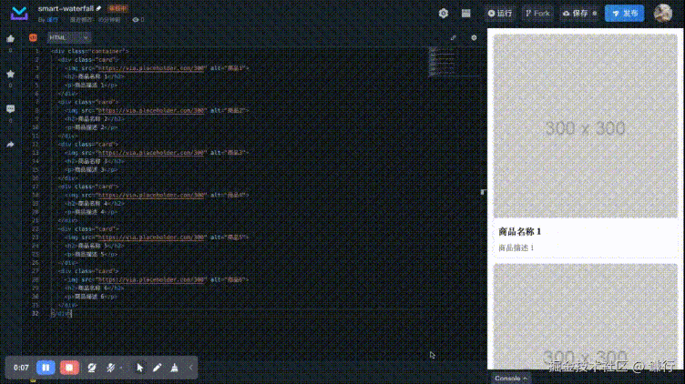
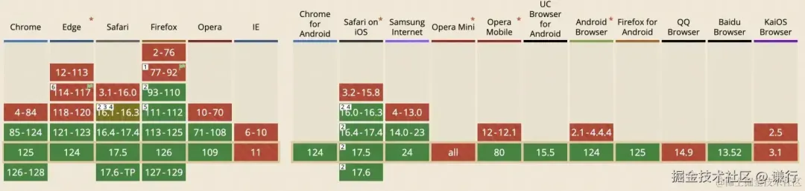
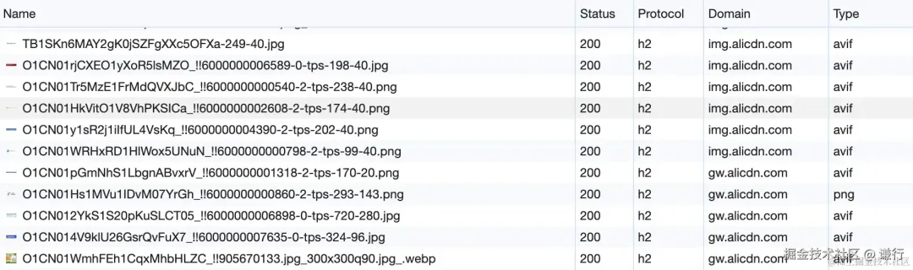

无限加载的商品瀑布流是电商最场景的最常用、最重要的组件，因此有一个高性能的瀑布流组件就变得无比重要
使用 Grid 布局，赢在起跑线
Grid 布局实现响应式非常简单，纯 CSS 实现，不依赖 JavaScript，性能优化赢在起点上
<style>
.container {
display: grid;
grid-template-columns: repeat(auto-fill, minmax(200px, 1fr));
gap: 12px;
padding: 12px;
}
</style>
<div class="container">
<div class="card">
<img src="https://via.placeholder.com/300" alt="商品1" />
<h2>商品名称 1</h2>
<p>商品描述 1</p>
</div>
<div class="card">
<img src="https://via.placeholder.com/300" alt="商品..." />
<h2>商品名称 ...</h2>
<p>商品描述 ...</p>
</div>
<div class="card">
<img src="https://via.placeholder.com/300" alt="商品6" />
<h2>商品名称 6</h2>
<p>商品描述 6</p>
</div>
</div>
使用 IntersectionObserver 实现懒加载
传统的懒加载通过监听 scroll 事件判断目标元素是否接近 / 出现在可视区，发起异步请求、加载更多的卡片。而现代浏览器可以使用浏览器原生的 IntersectionObserver API 监测目标元素是否出现在 Viewport
使用 IntersectionObserver 可以异步执行回调函数，无需频繁监听滚动事件，这样可以显著降低 CPU 和内存使用，从而提升性能
const target = document.getElementById("targetElement");
// 创建一个观察者
const observer = new IntersectionObserver((entries) => {
entries.forEach((entry) => {
if (entry.isIntersecting) {
// 目标元素进入 Viewport
target.style.backgroundColor = "lightgreen"; // 改变背景色
console.log("元素已进入 Viewport！");
} else {
// 目标元素离开 Viewport
target.style.backgroundColor = "lightblue"; // 还原背景色
console.log("元素已离开 Viewport！");
}
});
});
// 开始观察目标元素
observer.observe(target);
因此我们瀑布流的代码可以稍加改进
import React, { useEffect, useRef, useState } from "react";
const Waterfall = () => {
const [items, setItems] = useState([]);
const [loading, setLoading] = useState(false);
const observerRef = useRef();
const fetchItems = async () => {
setLoading(true);
// 模拟异步数据请求
const newItems = Array.from({ length: 10 }, (_, index) => ({
src: "https://via.placeholder.com/300x300",
}));
setTimeout(() => {
setItems((prevItems) => [...prevItems, ...newItems]);
setLoading(false);
}, 1000); // 模拟延迟
};
useEffect(() => {
const loadMore = (entries) => {
if (entries[0].isIntersecting) {
fetchItems();
observerRef.current.disconnect(); // 停止观察等待节点
}
};
const observer = new IntersectionObserver(loadMore, {
rootMargin: "1000px", // 距离 Viewport 1000px 提前触发
});
const target = document.querySelector("#load-more");
if (target) {
observer.observe(target);
}
return () => {
observer.disconnect(); // 清理观察者
};
}, [items]);
// 初始加载
useEffect(() => {
fetchItems();
}, []);
return (
<div class>
{items.map((item) => (
<div class key={item.id}>
<img src={item.src} alt={`Loaded item ${item.id}`} />
</div>
))}
{loading && <div>加载中...</div>}
<div id="load-more" style={{ height: "20px", marginBottom: "20px" }} />
</div>
);
};
export default Waterfall;
原生的图片懒加载 loading="lazy"
我们虽然已经通过 IntersectionObserver 对组件做了初步的懒加载，但还可以更进一步对 Viewport 的图片也做懒加载，传统也是通过监听 scroll 事件实现，现在大部分主流浏览器通过load="lazy"原生支持了图片懒加载，简单又高效
<img src="image-to-lazy-load.jpg" loading="lazy" />
当对图片设置了这个属性后，浏览器会根据自己的启发式算法决定图片的加载时机。这些算法会考虑多个因素，比如图片即将进入视口的距离，或者用户当前的网络条件等。通常启发式算法的工作方式如下：
- 视口接近度：浏览器会监测页面滚动，检查懒加载图片距离视口的距离。当图片快要出现在视口内时，浏览器会开始加载图片。具体开始加载图片的距离阈值并没有统一的标准，不同的浏览器可能会有不同的实现。
- 网络状况：一些浏览器可能会根据用户的网络状况（例如是否使用数据流量或者 Wi-Fi）来决定是否提前加载图片。
- CPU 和内存使用情况：如果用户设备的 CPU 或内存使用率很高，浏览器可能会延迟加载图片，直到资源使用减少。
- 电池状态：对于移动设备，浏览器可能会在电池电量充足时更积极地加载资源。
虽然开发者无法精准控制图片加载的时机，但浏览器原生支持考虑的因素不仅仅是滚动位置，相对而言更加合理。顺便说一句，使用 JavaScript 懒加载本身也有性能开销，可能会影响到页面的 FPS
非首屏图片异步解码
解码图像和视频是计算密集型的操作，可能会占用大量的 CPU 资源，特别是对于高分辨率或者复杂编码格式的媒体文件，如果主线程被图像或视频的解码操作阻塞，用户在滚动页面或尝试交互时可能会感受到卡顿或延迟
对非首屏图片或视频添加 decoding="async" 可以允许浏览器在后台处理图片、视频解码，而不阻塞主线程，继续处理和渲染页面的其余部分，这样可以有助于改善页面的加载性能，减少用户感知到的延迟，并提供更加平滑的用户体验
<img src="image.jpg" decoding="async" />
使用 useTransition 保证滚动丝滑
当用户滚动出发瀑布流不断加载时候 React 需要反复渲染商品卡片，这样的长时间计算可能会用户感到浏览器延迟或卡顿
React 18 引入了并发模式（Concurrent Mode）让开发者可以将某些状态更新标记为可中断的，从而允许 React 在必要时推迟这些更新，优先处理其它更为紧急的任务，使用useTransition 即可让开发者可以非阻塞的方式渲染 UI
import React, { useState, useTransition } from "react";
const ExampleComponent = () => {
const [items, setItems] = useState([]);
const [isPending, startTransition] = useTransition();
const addItem = () => {
startTransition(() => {
// 这个状态更新将被延迟
setItems((prevItems) => [...prevItems, `Item ${prevItems.length + 1}`]);
});
};
return (
<div>
<button onClick={addItem} disabled={isPending}>
{isPending ? "Adding..." : "Add Item"}
</button>
<ul>
{items.map((item, index) => (
<li key={index}>{item}</li>
))}
</ul>
</div>
);
};
由于瀑布流滚动加载的商品属于预加载，我们可以利用 useTransition 在必要时候推迟 React 渲染，防止用户浏览器卡顿
// src/Waterfall.js
import React, { useEffect, useRef, useState, useTransition } from "react";
import "./App.css"; // 导入对应的 CSS 文件
// 模拟获取随机高度的商品数据
const fetchItems = (count) => {
return new Promise((resolve) => {
setTimeout(() => {
resolve(
Array.from({ length: count }, (_, index) => {
const height = Math.floor(Math.random() * (300 - 100 + 1)) + 100; // 随机高度
return {
height,
src: `https://via.placeholder.com/200x${height}`,
};
})
);
}, 1000);
});
};
const Waterfall = () => {
const [items, setItems] = useState([]);
const [isPending, startTransition] = useTransition();
const observerRef = useRef();
const loadItems = () => {
startTransition(() => {
fetchItems(10).then((newItems) => {
setItems((prev) => [...prev, ...newItems]); // 更新状态
});
});
};
useEffect(() => {
const observer = new IntersectionObserver(
(entries) => {
if (entries[0].isIntersecting) {
loadItems();
observer.disconnect();
}
},
{ rootMargin: "1000px" } // 距离 Viewport 1000px 提前触发
);
if (observerRef.current) {
observer.observe(observerRef.current);
}
return () => {
observer.disconnect(); // 清理观察者
};
}, [items]);
// 初始加载
useEffect(() => {
loadItems();
}, []);
return (
<div class>
{items.map((item, index) => (
<div class key={index}>
<img
src={item.src}
loading="lazy"
decoding="async"
alt={`Loaded item ${index + 1}`}
style={{ height: item.height + "px" }}
/>
<h2>商品名称 {index + 1}</h2>
<p>商品描述 {index + 1}</p>
</div>
))}
{isPending && <div>加载中...</div>}
<div id="load-more" ref={observerRef} />
</div>
);
};
export default Waterfall;
延迟浏览器渲染 Viewport 之外元素
content-visibility 是 CSS 属性，允许浏览器跳过不在屏幕上的元素的渲染工作，直到用户滚动到它们的位置。通过跳过不可见内容的渲染，content-visibility 可以显著减少页面的初始加载时间，并降低内存的使用，从而改善用户体验。配合 contain-intrinsic-size 属性可以对容器进行渲染前的占位
<style>
.image-gallery {
content-visibility: auto;
contain-intrinsic-size: 340px 340px; /* 设置一个合适的占位大小 */
}
</style>
<div class="image-gallery">
<img src="image1.jpg" alt="描述1" />
<img src="image2.jpg" alt="描述2" />
<!-- 更多图片 -->
</div>
demo 中的 CSS 可以稍加改进
.waterfall-container {
display: grid;
grid-template-columns: repeat(auto-fill, minmax(250px, 1fr));
gap: 10px;
padding: 10px;
}
.item {
content-visibility: auto;
padding: 10px;
background-color: #f2f3f7;
border-radius: 5px;
}
.item img {
width: 100%;
}
压缩率更高的图片格式 AVIF
大部分 Web 开发者对 WebP 格式非常熟悉了，但可能对 AVIF 格式还没有开始应用。AVIF 是一种基于 AV1 视频编码的新图像格式，用于将 AV1 压缩的图片或图片序列存储为 HEIF 文件格式。相对于 JPEG，WEBP 这类图片格式来说，它的压缩率更高，并且画面细节更好，AVIF vs JPEG 大小节省约 50%，AVIF vs WebP 大小节省约 20%。主流浏览器的支持情况非常不错
浏览器在图片请求时候会在 Accept 头部信息中声明支持的图片格式，可以利用这个在 CDN 识别，使用相同的图片地址，返回不同格式的图片内容
避免前端加载 1px 透明图判断浏览器是否支持特定图片格式，然后修改图片 URL 来获取对应格式图片。这样的处理方式有两个弊端
- 发起图片请求依赖前端格式判断的异步过程，请求时机被推迟
- 使用新格式的图片包括后期的调整等，需要修改前端代码
小结
瀑布流可以使用以下手段进行性能优化
- 使用纯 CSS 实现 Grid 布局优化响应式性能
- 使用浏览器原生的 IntersectionObserver API 实现懒加载
- 使用浏览器原生的 loading="lazy" 实现图片懒加载
- 使用 decoding="async" 对图片进行异步解码
- 使用 useTransition 非阻塞渲染商品卡片
- 使用 content-visibility 延迟 Viewport 之外的元素渲染
- 使用压缩率更高的图片格式 AVIF